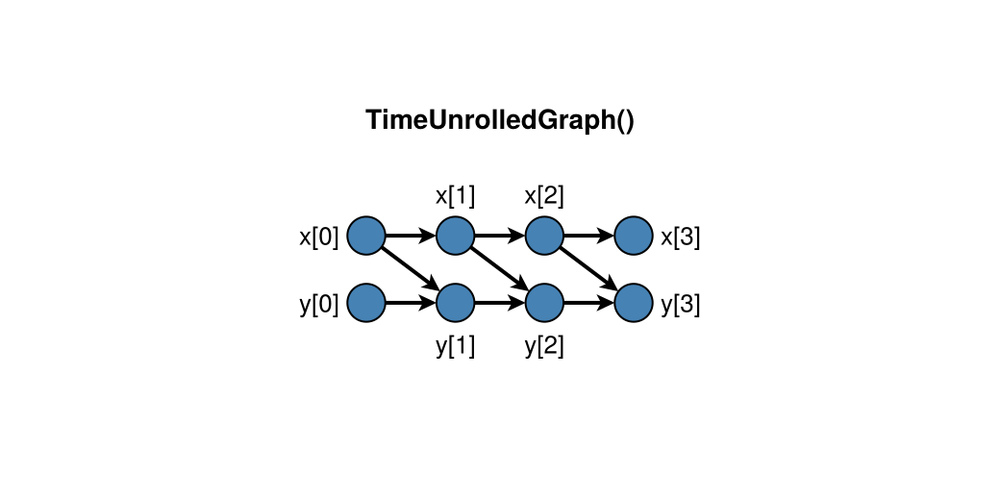
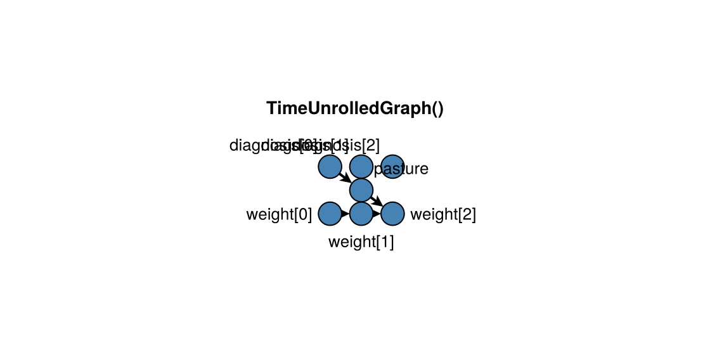

Time-indexed graphs
Discrete-time CDMs often share a time-invariant lag structure. Unroll that structure to a static DAG over times t = 0:T under a TimeUnrolledGraph, then apply standard identification on the causal projection. Node multiplicity follows temporal_support and graph_kind, not ontological_character. Single-node supports (FromOnsetSupport, GlobalSupport, …) keep one reused node that may be assigned at an explicit onset.
CausalDynamics.TemporalSupport — Type
Abstract temporal extent of the value represented by a node.
CausalDynamics.PointwiseSupport — Type
Point-supported value at each discrete $t ∈ 𝒯$ (default unrolling).
CausalDynamics.PointSupport — Type
The value represents $X(t)$ at one declared time.
CausalDynamics.IntervalSupport — Type
The value represents a quantity over $[start, stop]$.
CausalDynamics.FromOnsetSupport — Type
The value applies from an explicitly declared onset.
CausalDynamics.GlobalSupport — Type
No finite window under the model’s declared clock, when that property is stated separately from time invariance. Do not use this type to mean “support unspecified”: leave support unspecified or declare it explicitly. Time invariance of a value or mechanism is a distinct declaration, not an alias of global support.
CausalDynamics.GraphKind — Type
Abstract graph representation class for identification validity.
CausalDynamics.TimeUnrolledGraph — Type
Time-unrolled causal DAG; nodes indexed by temporal support.
CausalDynamics.ProcessGraph — Type
Process-level graph; DAG adjustment does not transfer automatically.
CausalDynamics.SemanticGraph — Type
Broader semantic diagram; may mix non-causal relations.
CausalDynamics.ReferentSpec — Type
ReferentSpec(id; identity_criterion=nothing, ontological_character=:unspecified)Declare what a variable concerns. Prefer placing identity_criterion and optional ontological_character here so measurements of the same referent share one declaration. identity_criterion is required only when continuity of the referent matters to the argument. An unspecified ontology is not a defective causal model.
CausalDynamics.LaggedEdge — Type
LaggedEdge(parent, child, lag; relation_kind=:causal_influence)Directed edge from parent at child_time - lag to child.
For a single-node child, child_time is its onset; for a single-node parent, the edge is emitted to every active time of the child.
CausalDynamics.TemporalNodeSpec — Type
TemporalNodeSpec(name; temporal_support=PointwiseSupport(),
value_representation=:unspecified, referent=nothing, causal_role=nothing)Describe one variable in a TemporalDAGSpec by three orthogonal declarations:
temporal_support: aTemporalSupport(or the symbol shorthands accepted byparse_temporal_support). It alone decides how many nodes the variable contributes when unrolled. A from-onset attribute must name its onset:FromOnsetSupport(t₀).value_representation: what a node's value is (:state,:event,:attribute,:trajectory,:interval_summary, …).referent: an optionalReferentSpecnaming what the variable is about, together with anyidentity_criterionandontological_character.referent_id = :sheepis shorthand forreferent = ReferentSpec(:sheep). Identity and ontology are declared on the referent, never on the node.
causal_role is optional descriptive metadata (:assigned, :mediator, …) read by downstream planners; it does not alter the graph.
Derived read-only properties: onset_time (from the support; 0 for pointwise and global supports), referent_id, identity_criterion, ontological_character.
CausalDynamics.TemporalDAGSpec — Type
TemporalDAGSpec(; entity, nodes, edges, graph_kind=TimeUnrolledGraph())Time-invariant temporal graph specification over TemporalNodeSpecs.
entity is an optional display label. Every node must have a unique name. graph_kind defaults to TimeUnrolledGraph; process and semantic graphs are not automatically valid for d-separation or adjustment.
CausalDynamics.TemporalUnrolling — Type
Result of unrolling a TemporalDAGSpec over time indices 0:T.
CausalDynamics.unroll_temporal_dag — Function
unroll_temporal_dag(spec, T)Unroll spec over times t = 0:T under TimeUnrolledGraph.
Single-node supports (FromOnsetSupport, GlobalSupport, …) contribute one node. A pointwise-to-single-node edge is an assignment into persistence: with child onset a, lag ℓ connects parent[a - ℓ] to the reused child node.
CausalDynamics.temporal_node — Function
temporal_node(unrolling, variable, t)Return the node for variable at time t. Single-node supports resolve to their reused node once active at t.
CausalDynamics.single_node — Function
Return the node index for a single-node (non-pointwise) variable.
CausalDynamics.temporal_node_label — Function
Return a human-readable label for an unrolled node index.
CausalDynamics.is_single_node — Function
Return whether this descriptor unrolls to one reused node.
CausalDynamics.temporal_edge_role — Function
temporal_edge_role(unrolling, parent, child) -> SymbolReturn the semantic role of an edge in a temporal unrolling.
If the edge was declared with a relation_kind other than :causal_influence (:constitutive_persistence, :constitutive_dependence, :participation, :measurement, …), that declared kind is returned. Otherwise the role is a construction-pattern label for a causal-influence edge, describing only the supports of its endpoints:
:onset_assignment— pointwise parent assigns into a single-node child:recurrent_influence— single-node parent influences a pointwise child:pointwise_influence— pointwise to pointwise:causal_influence— single-node to single-node
Support patterns never make an edge constitutive: an onset assignment is an ordinary causal edge unless declared otherwise. Derived roles do not alter the unrolled topology used for display.
CausalDynamics.temporal_edge_records — Function
temporal_edge_records(unrolling) -> Vector{NamedTuple}Return serialisable provenance records for every edge in a temporal unrolling. Each record contains the source and target temporal keys and the derived role returned by temporal_edge_role.
CausalDynamics.causal_projection — Function
causal_projection(unrolling) -> NamedTupleReturn the subgraph of causal-influence edges together with binding non-causal constraints (constitution, participation, measurement, …) that remain relevant for intervention admissibility.
Membership is decided only by the declared relation_kind of each edge. Support patterns (pointwise → single-node onset assignments, and so on) are construction facts and never demote a declared causal edge to a constraint: a diagnosis that assigns a subsequently maintained treatment is a causal parent of that treatment. To record a constitutive relation, declare it with LaggedEdge(...; relation_kind = :constitutive_persistence) or :constitutive_dependence.
CausalDynamics.d_separated_temporal — Function
Apply d-separation to two nodes in an unrolled temporal graph.
CausalDynamics.temporal_backdoor_adjustment_set — Function
Return a backdoor adjustment set of node indices for a temporal query.
CausalDynamics.temporal_backdoor_adjustment_nodes — Function
Return a temporal backdoor adjustment set as (variable, time) pairs.
CausalDynamics.semantic_fingerprint — Function
semantic_fingerprint(parts...) -> UInt64Stable digest of declared meanings. Distinct from graph_fingerprint.
CausalDynamics.validate_intervention_semantics — Function
validate_intervention_semantics(nodes, intervention; constraints, kwargs...)Combined P0 gate: interval-summary scalar $do$ refusal and feasibility constraints. Call from simulate/identify paths that carry a temporal spec. Justifications are InterventionJustification records (macro_intervention_justification, feasibility_justification).
CausalDynamics.assert_interval_summary_do! — Function
assert_interval_summary_do!(nodes, intervention; justification=nothing)Refuse a scalar $do(·)$ on an :interval_summary target unless justification is an InterventionJustification of a macro-intervention kind (:trajectory_generator, :admissible_trajectory_distribution, or :certificate_note) that names that target. A bare Boolean records nothing and is not accepted.
CausalDynamics.assert_feasibility! — Function
assert_feasibility!(constraints, intervention; justification=nothing)Wire :feasibility StructuralConstraintSpecs into intervention gates. Mathematical admissibility and practical availability are separate; positivity is none of these. An intervention on a constrained target passes only when justification is an InterventionJustification of kind :physical_justification naming that target.
CausalDynamics.InterventionJustification — Type
InterventionJustification(kind, targets, note; source=nothing)Recorded justification that licenses an otherwise-refused intervention. It is an artefact for the certificate, not a switch: it names what is claimed (kind), for which targets, and why (note), so the claim can be audited and travels with the analysis.
Accepted kinds:
- macro-interventions on
:interval_summarytargets —:trajectory_generator,:admissible_trajectory_distribution,:certificate_note; :feasibilityconstraints —:physical_justification.
note must be non-empty. source may point to a document, protocol, or certificate identifier.
CausalDynamics.justifies — Function
Return true when justification covers target with one of kinds.
CausalDynamics.intervention_targets — Function
Collect intervention target symbols from common intervention types.
CausalDynamics.ObservationSemantics — Type
ObservationSemantics(; realisation, sampling_interval, aggregation_window, measurement, availability)Separate when a quantity is realised, sampled, summarised, measured, and available to a decision-maker.
CausalDynamics.expands_pointwise — Function
Return whether unrolling emits one node per discrete time.
CausalDynamics.is_single_node_support — Function
Return whether the support contributes a single reused graph node.
CausalDynamics.parse_temporal_support — Function
parse_temporal_support(support; onset=nothing) -> TemporalSupportAccept a typed support or a symbol shorthand (:point, :pointwise, :global).
:interval is refused: use IntervalSupport with an explicit window. :from_onset is refused unless an explicit onset is supplied: the onset must follow the mechanism (an attribute generated by a lag-one assignment from t = 0 has onset 1; one present at baseline has onset 0), so a symbol alone does not name it. Prefer FromOnsetSupport(t₀).
CausalDynamics.VALUE_REPRESENTATIONS — Constant
Allowed value_representation symbols (plus aliases normalised elsewhere).
CausalDynamics.RELATION_KINDS — Constant
Allowed LaggedEdge.relation_kind symbols.
CausalDynamics.IDENTIFICATION_STATUSES — Constant
Identification outcome labels on IdentificationResult.
Single-node attributes from onset
Typed support decides node count. A pasture assignment that persists from onset uses FromOnsetSupport (and usually value_representation = :attribute). Identity and ontology, when claimed, live on a shared ReferentSpec and never change node count.
using CausalDynamics, Graphs
sheep = ReferentSpec(:sheep; identity_criterion = :administrative_identifier)
spec = TemporalDAGSpec(
entity = :sheep,
nodes = [
TemporalNodeSpec(:diagnosis; value_representation = :state, referent = sheep),
TemporalNodeSpec(
:pasture;
temporal_support = FromOnsetSupport(1),
value_representation = :attribute,
causal_role = :assigned,
referent = sheep,
),
TemporalNodeSpec(:weight; value_representation = :state, referent = sheep),
],
edges = [
(:diagnosis, :pasture, 1),
(:pasture, :weight, 0),
(:weight, :weight, 1),
],
)
u = unroll_temporal_dag(spec, 2)
nv(u.graph), temporal_node_label(u, single_node(u, :pasture))(7, "pasture")Panel mapping follows support: single-node variables keep their bare column symbol; pointwise variables use panel_column_name. Prefer declaring temporal_support on the DAG rather than a downstream unit_level override. The symbol shorthand :from_onset is refused without an onset; write FromOnsetSupport(t₀).
The unrolled graph retains edge provenance. Use temporal_edge_role for one edge and temporal_edge_records for an auditable inventory. For edges declared with a relation_kind other than :causal_influence the role is that declared kind. For causal-influence edges the role is a construction-pattern label only: :onset_assignment (pointwise → single-node), :recurrent_influence (single-node → pointwise), :pointwise_influence (pointwise → pointwise), or :causal_influence (single-node → single-node). Support patterns never make an edge constitutive: a diagnosis assigning a subsequently maintained treatment is a causal parent of that treatment.
causal_projection keeps every edge declared :causal_influence and records every other declared kind (:constitutive_persistence, :constitutive_dependence, :participation, :measurement, …) as a constraint. Constitution therefore has to be declared; it is never inferred from node multiplicity.
proj = causal_projection(u)
ne(proj.graph), length(proj.constraints)(5, 0)records = temporal_edge_records(u)
filter(record -> record.role === :onset_assignment, records)1-element Vector{NamedTuple{(:parent, :child, :role)}}:
(parent = (:diagnosis, 0), child = (:pasture, nothing), role = :onset_assignment)Plotting an unrolling
With DAGMakie.jl loaded, DAGMakie.dagplot_temporal places times left→right and variables as rows. Markers follow value_representation: only :interval_summary uses a rounded rectangle under the package convention. From-onset attributes and pointwise states remain circles unless you pass an explicit node_marker. Shape does not encode enduring identity. The CausalDynamics extension adds a TemporalUnrolling method automatically.
using CausalDynamics, DAGMakie, CairoMakie
spec = TemporalDAGSpec(
nodes = [
TemporalNodeSpec(:x; value_representation = :state),
TemporalNodeSpec(:y; value_representation = :state),
],
edges = [(:x, :x, 1), (:y, :y, 1), (:x, :y, 1)],
)
u = unroll_temporal_dag(spec, 3)
fig, ax, p = dagplot_temporal(u;
figure_size = (520, 260),
fit_node_size_to_labels = false,
node_size = 28,
)
fig
using CausalDynamics, DAGMakie, CairoMakie
spec = TemporalDAGSpec(
entity = :sheep,
nodes = [
TemporalNodeSpec(:diagnosis; value_representation = :state),
TemporalNodeSpec(
:pasture;
temporal_support = FromOnsetSupport(1),
value_representation = :attribute,
causal_role = :assigned,
),
TemporalNodeSpec(:weight; value_representation = :state),
],
edges = [
(:diagnosis, :pasture, 1),
(:pasture, :weight, 0),
(:weight, :weight, 1),
],
)
u = unroll_temporal_dag(spec, 2)
fig, ax, p = dagplot_temporal(u;
figure_size = (560, 280),
fit_node_size_to_labels = false,
node_size = 26,
)
fig
Confounded treatment (book Ch. 28)
using CausalDynamics
spec = TemporalDAGSpec(
nodes = [TemporalNodeSpec(v; value_representation = :state) for v in [:x, :y, :a, :c]],
edges = [
(:c, :c, 1), (:a, :c, 1), (:c, :a, 0), # confounder dynamics + confounding
(:x, :x, 1), (:a, :x, 1), (:c, :x, 1), # state evolution
(:x, :y, 0), # measurement
],
)
u = unroll_temporal_dag(spec, 10)
# Effect of A_{t-1} on X_t: adjust for C_{t-1}
adj = temporal_backdoor_adjustment_nodes(u, :a, 2, :x, 2)
# Set containing (:c, 1)See also Utilities, Discrete-time CDMs, and the CDCS book Ch. 28.
Baseline assignment into a from-onset attribute
A point-supported diagnosis can assign a value that persists thereafter. With FromOnsetSupport(1), a lag-one edge from diagnosis connects diagnosis[0] to the single pasture node:
spec = TemporalDAGSpec(
entity = :sheep,
nodes = [
TemporalNodeSpec(:diagnosis; value_representation = :state),
TemporalNodeSpec(
:pasture;
temporal_support = FromOnsetSupport(1),
value_representation = :attribute,
),
TemporalNodeSpec(:weight; value_representation = :state),
],
edges = [
(:diagnosis, :pasture, 1),
(:pasture, :weight, 0),
],
)
u = unroll_temporal_dag(spec, 4)
temporal_node(u, :diagnosis, 0)
single_node(u, :pasture)